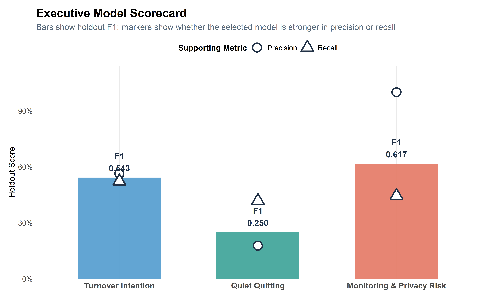
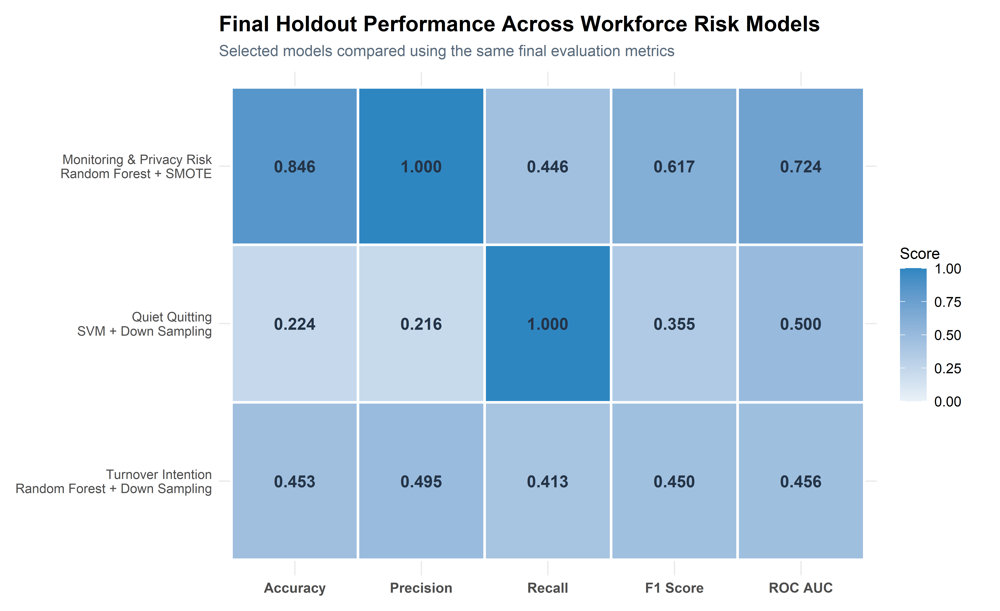
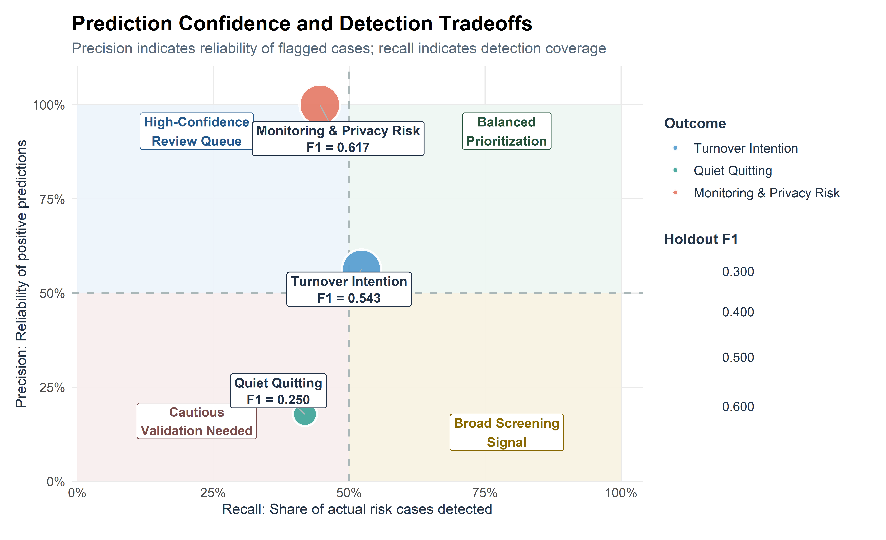
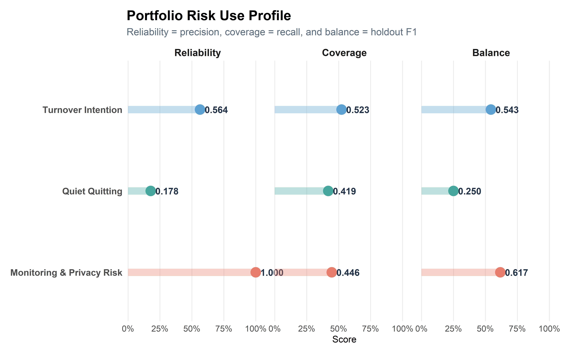
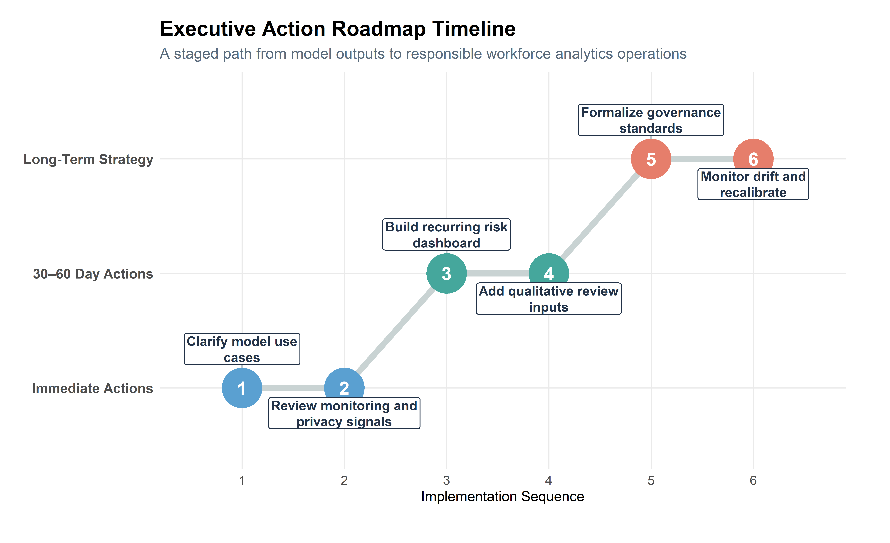

Executive Insights: Workforce Risk Modeling Results
This section synthesizes the final modeling results across turnover intention, quiet quitting, and monitoring-related turnover risk, translating model performance into executive-level workforce insights, governance guidance, and practical HR action priorities.
Executive Summary
This final section synthesizes the full workforce analytics pipeline, moving from exploratory analysis and predictive modeling into executive-level interpretation.
Across the three modeling tracks, the project evaluates turnover intention, quiet quitting, and monitoring-related turnover risk using a consistent modeling framework. Together, these outcomes show that workforce risk is not one-dimensional. Each target reflects a different business problem, requires a different interpretation strategy, and supports a different type of workforce decision.
The strongest holdout model was Random Forest + Up Sampling for Monitoring & Privacy Risk, with a holdout F1 Score of 0.617. The strongest precision result was Random Forest + Up Sampling for Monitoring & Privacy Risk, indicating the most reliable review queue among flagged cases.
The main business takeaway is that these models should be used as risk prioritization tools, not automated decision systems. Their value is in helping HR, leadership, and governance teams focus attention earlier, identify patterns across workforce signals, and guide more targeted human review.
Final Modeling Results
The final modeling results provide a portfolio-level view of how each workforce-risk outcome performed after model development, cross-validation, and holdout confirmation.
These outcomes should not be compared as if they represent the same type of problem. Turnover intention, quiet quitting, and monitoring-related turnover risk differ in signal strength, business sensitivity, interpretability, and practical use.
The goal of this section is to translate model performance into executive decision guidance: which outcomes are most reliable, which require caution, and how each model should be used responsibly.
Executive Model Scorecard

The scorecard gives a compact executive view of the selected models. Holdout F1 Score summarizes overall balance, while the marker positions show whether each model leans more toward precision (reliability of flagged cases) or recall (coverage of true risk cases).
Monitoring & Privacy Risk shows the strongest overall balance and the strongest precision profile. Turnover Intention remains reasonably balanced for prioritization use. Quiet Quitting is materially weaker on holdout F1, indicating that it should be interpreted more cautiously and paired with additional qualitative context.
Final Model Comparison

The portfolio comparison shows that monitoring-related turnover risk produced the strongest overall holdout profile, especially in precision and F1 Score. This suggests the monitoring/privacy model is the most reliable for identifying a focused review queue.
Turnover intention produced moderate but usable holdout performance, making it appropriate for retention-risk prioritization rather than definitive classification. Quiet quitting showed weaker transfer from cross-validation to holdout performance, meaning it should be interpreted more cautiously as an early-warning engagement screen.
Prediction Confidence & Practical Use

This view shows why each model should be used differently. A model with higher precision is better suited for focused review because flagged employees are more likely to represent meaningful risk. A model with higher recall is better suited for broader screening because it captures more potential cases, but it may also generate more false positives.
The monitoring/privacy model shows the strongest evidence for confident prioritization because it produces the highest reliability among positive predictions. The turnover model provides a more balanced retention-risk signal. The quiet quitting model should be interpreted more cautiously as an early engagement signal that requires additional survey, manager, or qualitative context before action is taken.
Risk Segmentation Across Outcomes
Portfolio Risk Use Matrix

This profile converts technical metrics into decision language. Reliability reflects how trustworthy a positive flag is, coverage reflects how much risk the model detects, and balance summarizes the overall usefulness of the selected model.
The comparison reinforces the broader portfolio story. Monitoring & Privacy Risk is strongest on reliability and overall balance, Turnover Intention is moderate but usable across all three dimensions, and Quiet Quitting is comparatively weaker and should be used as a supporting engagement signal rather than a standalone decision tool.
Cross-Model Workforce Patterns
The modeling results point to a common theme across the project: workforce risk rarely emerges from a single variable. Instead, risk appears through overlapping behavioral, organizational, wellbeing, trust, and employee-experience signals.
The three outcomes represent distinct forms of workforce vulnerability:
- Turnover intention reflects potential exit risk.
- Quiet quitting reflects potential disengagement while remaining employed.
- Monitoring-related turnover risk reflects workforce trust and privacy pressure connected to surveillance or monitoring practices.
Together, these outcomes show that employee risk should be interpreted as a portfolio of signals rather than a single prediction.
Outcome-Specific Risk Differences
Although the models share common workforce themes, each outcome requires a different business response.
Turnover intention is most useful for identifying employees who may require retention conversations, manager follow-up, workload review, or career-pathing support.
Quiet quitting is more ambiguous because disengagement can be behavioral, emotional, or contextual. It is better suited for engagement monitoring and qualitative follow-up than direct intervention.
Monitoring-related risk is the clearest governance signal because it connects workforce risk to privacy, trust, surveillance, and policy design.
Strategic Workforce Recommendations
The modeling results support a practical executive strategy: use predictive outputs to prioritize attention, then combine those signals with human context, qualitative information, and organizational judgment.
The recommendations below translate the modeling results into workforce action areas.
Responsible Use & Governance
Because these models deal with workforce risk, responsible use is central to the project. The models should support better questions, earlier review, and more consistent prioritization. They should not be used as automated decision systems.
The strongest governance principle is simple: model outputs should inform human review, not replace it.
What the Models Can Do
These models can help organizations:
- Identify where workforce risk may be concentrated
- Compare risk patterns across outcomes
- Prioritize HR, manager, leadership, or governance review
- Support earlier intervention before risk becomes visible through turnover, disengagement, or employee complaints
- Create a repeatable analytics framework for workforce decision support
What the Models Should Not Do
These models should not be used to:
- Make automatic employment decisions
- Label employees as problems or flight risks without context
- Replace manager judgment, HR review, or employee voice
- Justify monitoring expansion without governance review
- Trigger punitive action without human validation
Human-in-the-Loop Decision Guidance
The appropriate use case is human-in-the-loop prioritization. Model outputs can help identify where review may be needed, but final interpretation should include employee context, manager knowledge, organizational conditions, privacy considerations, and ethical review.
This is especially important for monitoring-related risk, where model outputs may reflect employee trust and privacy concerns. In that context, the goal is not to increase surveillance, but to improve transparency, governance, and workforce support.
Roadmap Timeline View

Final Takeaway
This project demonstrates how synthetic HR data can support a realistic workforce analytics pipeline, from data preparation and exploratory analysis to predictive modeling and executive decision support.
The strongest insight is not that one model solves workforce risk. Instead, the results show that different workforce outcomes require different interpretations. Turnover intention is useful for retention-risk prioritization, quiet quitting is best treated as an early engagement signal, and monitoring/privacy risk provides the clearest governance-focused review signal.
Used responsibly, this framework helps organizations move from reactive reporting to proactive workforce intelligence. The models do not replace human judgment; they help leaders ask better questions, prioritize attention, and respond earlier to patterns that may affect retention, engagement, trust, and organizational effectiveness.